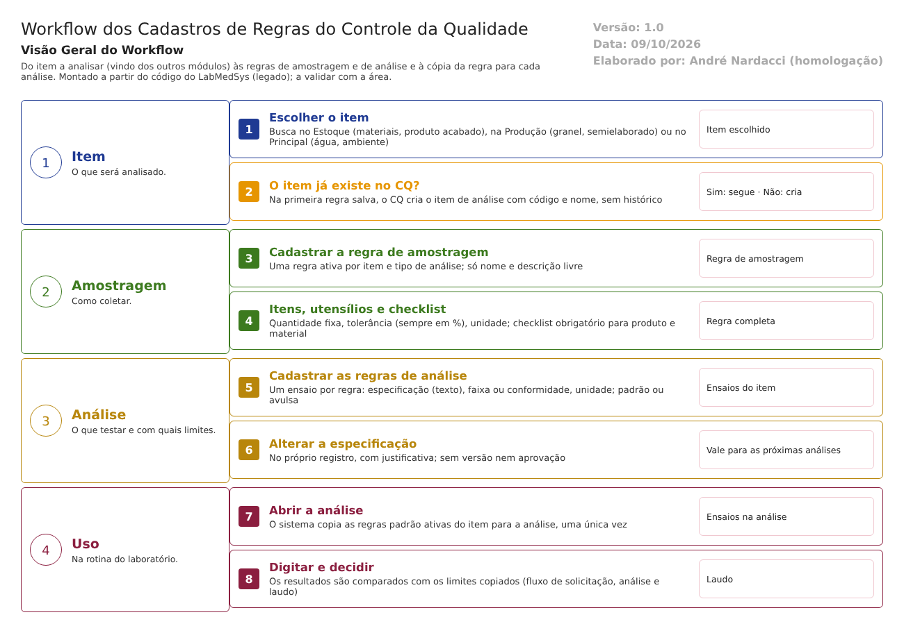
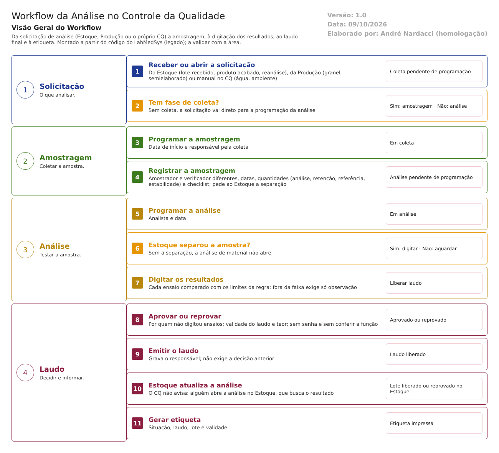
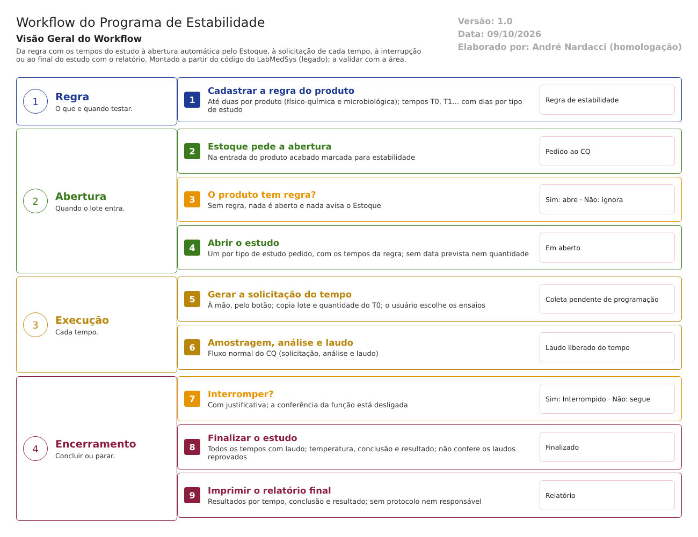

Legado · o sistema entregue pelo fornecedor
Controle da Qualidade · Legado
Solicitação de análise, amostragem, análise, laudo, etiqueta e estabilidade. 25 telas (22 com lógica, 3 protótipos) em cinco menus documentados tela a tela, quatro fluxos com roteiro de execução, 119 regras de negócio e mapa de conformidade com a RDC 658/2022: dos 16 temas da norma, 8 atendidos em parte e 8 não atendidos. Testes de tela em 23/10/2026 e 28 a 30/10/2026: dos 63 casos (61 do plano e 2 das telas fora do menu), 50 conclusivos; 13 ficaram bloqueados (estabilidade e água). 46 defeitos para correção, 21 de gravidade Alta, entre eles o laudo que não confere quem decide (aprova quem não tem a função de chefe, até o perfil só de consulta), a falta de histórico em aprovar, emitir, cancelar e excluir, e a decisão que não chega sozinha ao Estoque. Todos os entregáveis emitidos. Parecer: não apto para uso em ambiente regulado.
Documentação das 50 telas do sistema entregue. Abrir a lista de telas do legado →
Documentação das 50 telas da versão nova: nenhuma tem conteúdo validado ainda; todas aparecem como “ainda não validada nesta versão”. Abrir a lista de telas da versão nova →
O ideal (como o módulo deve funcionar) é um só e vale para as duas versões.
Comece aqui
Esta parte tem 145 documentos, do primeiro (Reconhecimento do módulo) ao último (Dossiê de homologação). Leia na ordem: cada documento leva ao próximo.
Telas e situação
O que existe no sistema entregue, como as telas se organizam nos menus e o que funciona.
Siga o processo
Como o trabalho anda, etapa por etapa, na ordem em que acontece. Onde há roteiro, ele vem logo depois do fluxo.

Regras de amostragem e de análisePasso a passo para testar (5 telas)

Solicitação, análise e laudoPasso a passo para testar (11 telas)

EstabilidadePasso a passo para testar (4 telas)
Menus do sistema, tela a tela
Uma página por tela dos menus Controle de Desvios e Controle de Mudanças: manual do usuário, campos, botões, mensagens, regras de negócio, fluxo, falhas e casos de teste, cada uma com o Word para baixar.
Solicitação de Análise
Amostragem
Análise e Laudo
Tabelas de Apoio e Regulatório
Fora do menu
Regras e uso
O que o sistema entregue faz com cada dado, quem pode fazer o quê e como usar.
ANVISA: norma e risco
O que a ANVISA exige e onde está o risco.
Dados e integrações
Para a equipe de desenvolvimento: modelo de dados e integrações do sistema entregue.
Testes e defeitos
O que foi testado nas telas do sistema entregue, o que falhou e como corrigir.
Fechamento
O parecer do módulo, por que ele está (ou não) apto, e o dossiê que reúne tudo.
Fim do roteiro deste módulo
Segue o caminho do processo: Próximo módulo: Garantia da Qualidade →
Antes deste: OPE (Gerador de OPE)